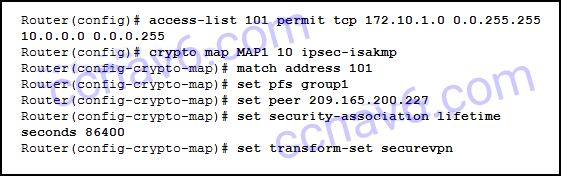

1.¿Cuándo se crea una asociación de seguridad (SA) si se utiliza un túnel VPN IPsec para conectarse entre dos sitios?
- Después de crear el túnel, pero antes de enviar el tráfico.
- solo durante la fase 2
- solo durante la fase 1
- durante la fase 1 y 2 *
- @Javi__Super
Como se ve en la Figura 8.4.1.1, una conexión VPN IPsec crea dos SA: (1) al finalizar la Fase 1 de IKE una vez que los interlocutores negocian la política de IKE SA, y (2) al final de la Fase 2 de IKE después de la Los conjuntos de transformación son negociados.
2.¿En qué situación se desactivaría el Cisco Discovery Protocol?
- cuando un teléfono Cisco VoIP se conecta a un conmutador Cisco
- cuando un conmutador Cisco se conecta a otro conmutador Cisco
- cuando un conmutador Cisco se conecta a un enrutador Cisco
- cuando una PC con Cisco IP Communicator instalado se conecta a un conmutador Cisco *
- @Javi__Super
Cisco Discovery Protocol debe estar deshabilitado en los puertos que no se conectan a otros dispositivos Cisco. A pesar de que la PC tiene instalado un producto de software de Cisco, el puerto al que se conecta debe tener el Protocolo de Descubrimiento de Cisco deshabilitado debido a la información de la red que se puede derivar de la captura de los mensajes del Protocolo de Descubrimiento de Cisco.
3.¿Qué dos afirmaciones describen con precisión las características de IPsec? (Escoge dos.)
- IPsec trabaja en la capa de transporte y protege los datos en la capa de red.
- IPsec es un marco de estándares propietarios que dependen de algoritmos específicos de Cisco.
- IPsec funciona en la capa de red y funciona con todos los protocolos de Capa 2. *
- IPsec es un marco de estándares abiertos que se basa en algoritmos existentes. *
- @Javi__Super
IPsec puede asegurar una ruta entre dos dispositivos de red. IPsec puede proporcionar las siguientes funciones de seguridad:
Confidencialidad: IPsec garantiza la confidencialidad mediante el uso de cifrado.
Integridad: IPsec garantiza que los datos lleguen sin cambios al destino mediante un algoritmo hash, como MD5 o SHA.
Autenticación: IPsec utiliza Internet Key Exchange (IKE) para autenticar usuarios y dispositivos que pueden realizar la comunicación de forma independiente. IKE utiliza varios tipos de autenticación, incluidos el nombre de usuario y la contraseña, la contraseña de un solo uso, la biométrica, las claves compartidas (PSK) y los certificados digitales.
Intercambio seguro de claves: IPsec usa el algoritmo Diffie-Hellman (DH) para proporcionar un método de intercambio de claves públicas para que dos pares establezcan una clave secreta compartida.
4.¿Qué acción realizan los interlocutores de IPsec durante el intercambio IKE Fase 2?
- intercambio de claves DH
- Negociación de la política IPsec *
- negociación de conjuntos de políticas IKE
- verificación de la identidad de los compañeros
- @Javi__Super
El protocolo IKE se ejecuta en dos fases. Durante la Fase 1, las dos partes negocian los conjuntos de políticas IKE, se autentican entre sí y configuran un canal seguro. Durante la segunda fase, IKE negocia asociaciones de seguridad entre los pares.
5.¿Qué técnica es necesaria para garantizar una transferencia privada de datos mediante una VPN?
- cifrado *
- autorización
- virtualización
- escalabilidad
- @Javi__Super
Las transferencias de datos confidenciales y seguras con VPN requieren cifrado de datos.
6.¿Qué enunciado describe una VPN?
- Las VPN utilizan software de virtualización de código abierto para crear el túnel a través de Internet.
- Las VPN utilizan conexiones virtuales para crear una red privada a través de una red pública. *
- Las VPN utilizan conexiones físicas dedicadas para transferir datos entre usuarios remotos.
- Las VPN utilizan conexiones lógicas para crear redes públicas a través de Internet.
- @Javi__Super
7.¿Qué conjunto de transformación proporciona la mejor protección?
- crypto ipsec transform-set ESP-DES-SHA esp-aes-256 esp-sha-hmac *
- crypto ipsec transform-set ESP-DES-SHA esp-3des esp-sha-hmac
- crypto ipsec transform-set ESP-DES-SHA esp-des esp-sha-hmac
- crypto ipsec transform-set ESP-DES-SHA esp-aes esp-des esp-sha-hmac
- @Javi__Super
DES utiliza claves de 56 bits. 3DES utiliza claves de 56 bits, pero se cifra tres veces. AES utiliza claves de 128 bits. AES-256 usa claves de 256 bits y es la más fuerte.
8.¿Qué tres puertos deben estar abiertos para verificar que un túnel VPN IPsec funciona correctamente? (Elige tres.)
- 168
- 50 *
500 * - 51 *
- @Javi__Super
9.Consulte la presentación. ¿Cómo tratará el enrutador el tráfico que no coincide con el definido en la lista de acceso 101?
-

- Se enviará sin cifrar. *
- Será enviado encriptado.
- Será bloqueado.
- Será descartado.
- @Javi__Super
La lista de acceso 101 es parte de la configuración del mapa criptográfico en el enrutador. El propósito de la lista de acceso es identificar el tráfico interesante que debe enviarse encriptado a través de una VPN. El tráfico que no coincide con la lista de acceso no es interesante y no se envía cifrado sino que se envía sin cifrar en texto sin formato.
10.¿Qué tres protocolos deben permitirse a través del firewall de la empresa para establecer las VPN de sitio a sitio de IPsec? (Elige tres.)
- HTTPS
- ESP *
- AH *
- ISAKMP *
- @Javi__Super
ESP, AH e ISAKMP deben estar permitidos a través de los enrutadores del perímetro y los cortafuegos para que se puedan establecer las VPN de sitio a sitio de IPsec. NTP y HTTPS son protocolos de aplicación y no son necesarios para IPsec.
11.¿Qué enunciado describe el efecto de la longitud de la clave para disuadir a un atacante de hackear una clave de cifrado?
- La longitud de una clave no afecta el grado de seguridad.
- Cuanto más corta es la clave, más difícil es romperla.
- Cuanto más larga sea la clave, más posibilidades existen. *
- La longitud de una clave no variará entre los algoritmos de cifrado.
- @Javi__Super
Mientras previene los ataques de fuerza bruta y otros problemas de descifrado forzado, cuanto más larga es la longitud de la clave, más difícil es romperla. Una clave de 64 bits puede tardar un año en romperse con una computadora sofisticada, mientras que una clave de 128 bits puede demorar 1019 años en descifrar. Diferentes algoritmos de encriptación proporcionarán diferentes longitudes de clave para la implementación.
12.¿Cuál es el propósito de configurar múltiples ACL criptográficas al crear una conexión VPN entre sitios remotos?
- Al aplicar la ACL en una interfaz pública, se pueden crear múltiples ACL criptográficas para evitar que los usuarios públicos se conecten al enrutador habilitado para VPN.
- Varias ACL criptográficas pueden definir múltiples interlocutores remotos para conectarse con un enrutador habilitado para VPN a través de Internet o una red.
- Se pueden configurar múltiples ACL criptográficas para impedir que el tráfico de red específico cruce una VPN.
- Cuando se eligen múltiples combinaciones de protección IPsec, múltiples ACL criptográficas pueden definir diferentes tipos de tráfico. *
- @Javi__Super
Una ACL criptográfica puede definir el "tráfico interesante" que se utiliza para crear una VPN y reenviar ese "tráfico interesante" a través de la VPN a otro enrutador habilitado para VPN. Se utilizan múltiples ACL criptográficas para definir diferentes tipos de tráfico y utilizar diferentes protecciones IPsec correspondientes a los diferentes tipos de tráfico.
13.Considere la siguiente configuración en un ASA de Cisco:
crypto ipsec transform-set ESP-DES-SHA esp-des esp-sha-hmac
¿Cuál es el propósito de este comando?
- para definir los parámetros ISAKMP que se utilizan para establecer el túnel
- para definir los algoritmos de cifrado e integridad que se utilizan para construir el túnel IPsec *
- Para definir qué tráfico está permitido y protegido por el túnel.
- para definir solo los algoritmos de cifrado permitidos
- @Javi__Super
El conjunto de transformación se negocia durante la Fase 2 del proceso de conexión VPN de IPsec. El propósito del conjunto de transformación es definir qué esquemas de encriptación y autenticación se pueden usar. El dispositivo que realiza la iniciación de VPN ofrece los conjuntos de transformación aceptables en orden de preferencia, en este caso, la autenticación ESP utilizando DES para el cifrado o la autenticación ESP utilizando la autenticación e integridad SHA-HMAC para la carga útil de datos. Recuerde que ESP proporciona confidencialidad con encriptación e integridad con autenticación. El ESP-DES-SHA es el nombre del conjunto de transformación. Los parámetros que siguen (esp-des y esp-sha-hmac) son los tipos específicos de encriptación o autenticación que admite ASA para el túnel VPN que usa este conjunto de transformación.
14.¿Qué protocolo proporciona servicios de autenticación, integridad y confidencialidad y es un tipo de VPN?
- ESP
- IPsec *
- MD5
- AES
- @Javi__Super
Los servicios IPsec permiten la autenticación, integridad, control de acceso y confidencialidad. Con IPsec, la información intercambiada entre sitios remotos se puede cifrar y verificar. Tanto las VPN de acceso remoto como de sitio a sitio se pueden implementar mediante IPsec.
15.¿Qué tres afirmaciones describen el marco del protocolo IPsec? (Elige tres.)
- AH proporciona integridad y autenticación. *
- ESP proporciona cifrado, autenticación e integridad. *
- AH usa el protocolo IP 51. *
- AH proporciona cifrado e integridad.
- @Javi__Super
Los dos protocolos principales utilizados con IPsec son AH y ESP. AH es el número de protocolo 51 y proporciona autenticación e integridad de datos para paquetes IP que se intercambian entre pares. ESP, que es el número de protocolo 50, realiza el cifrado de paquetes.
16.¿Qué enunciado describe con precisión una característica de IPsec?
- IPsec trabaja en la capa de aplicación y protege todos los datos de la aplicación.
- IPsec es un marco de estándares desarrollado por Cisco que se basa en algoritmos OSI.
- IPsec es un marco de estándares propietarios que dependen de algoritmos específicos de Cisco.
- IPsec es un marco de estándares abiertos que se basa en algoritmos existentes. *
- @Javi__Super
IPsec puede asegurar una ruta entre dos dispositivos de red. IPsec puede proporcionar las siguientes funciones de seguridad: br
Confidencialidad: IPsec garantiza la confidencialidad mediante el uso de cifrado.
Integridad: IPsec garantiza que los datos lleguen sin cambios al destino mediante un algoritmo hash, como MD5 o SHA.
Autenticación: IPsec utiliza Internet Key Exchange (IKE) para autenticar usuarios y dispositivos que pueden realizar la comunicación de forma independiente. IKE utiliza varios tipos de autenticación, incluidos el nombre de usuario y la contraseña, la contraseña de un solo uso, la biométrica, las claves compartidas (PSK) y los certificados digitales.
Intercambio seguro de claves: IPsec utiliza el algoritmo Diffie-Hellman (DH) para proporcionar un método de intercambio de claves públicas para que dos pares establezcan una clave secreta compartida.
17.¿Qué dos protocolos IPsec se utilizan para proporcionar integridad de datos?
- SHA *
- AES
- MD5 *
- RSA
- @Javi__Super
El marco IPsec utiliza varios protocolos y algoritmos para proporcionar confidencialidad de datos, integridad de datos, autenticación e intercambio de claves seguro. Dos algoritmos populares utilizados para garantizar que los datos no sean interceptados y modificados (integridad de los datos) son MD5 y SHA. AES es un protocolo de cifrado y proporciona confidencialidad de datos. DH (Diffie-Hellman) es un algoritmo utilizado para el intercambio de claves. RSA es un algoritmo utilizado para la autenticación.
18.¿Cuál es la función del algoritmo Diffie-Hellman dentro del marco IPsec?
- proporciona autenticación
- permite a los compañeros intercambiar claves compartidas *
- garantiza la integridad del mensaje
- proporciona un fuerte cifrado de datos
- @Javi__Super
El marco IPsec utiliza varios protocolos y algoritmos para proporcionar confidencialidad de datos, integridad de datos, autenticación e intercambio de claves seguro. DH (Diffie-Hellman) es un algoritmo utilizado para el intercambio de claves. DH es un método de intercambio de clave pública que permite a dos pares de IPsec establecer una clave secreta compartida en un canal inseguro.
19.Consulte la presentación. ¿Qué algoritmo HMAC se utiliza para proporcionar integridad de datos?
- MD5
- AES
- SHA *
- DH
- @Javi__Super
Dos algoritmos populares que se utilizan para garantizar que los datos no sean interceptados y modificados (integridad de los datos) son MD5 y SHA. El comando Router1 (config-isakmp) # hash sha indica que se está utilizando SHA. AES es un protocolo de cifrado y proporciona confidencialidad de datos. DH (Diffie-Hellman) es un algoritmo que se utiliza para el intercambio de claves. RSA es un algoritmo utilizado para la autenticación.
20.¿Qué se necesita para definir el tráfico interesante en la creación de un túnel IPsec?
- asociaciones de seguridad
- algoritmo de hash
- lista de acceso *
- conjunto de transformación
- @Javi__Super
Para activar un túnel IPsec, se debe configurar una lista de acceso con una declaración de permiso que identifique el tráfico interesante. Una vez que el tráfico interesante se detecta al hacer coincidir la lista de acceso, se pueden negociar las asociaciones de seguridad del túnel.
21.Consulte la presentación. ¿Qué algoritmo se utilizará para proporcionar confidencialidad?
- RSA
- Diffie-Hellman
- DES
- AES *
- @Javi__Super

El marco IPsec utiliza varios protocolos y algoritmos para proporcionar confidencialidad de datos, integridad de datos, autenticación e intercambio de claves seguro. Dos algoritmos populares que se utilizan para garantizar que los datos no sean interceptados y modificados (integridad de los datos) son MD5 y SHA. AES es un protocolo de cifrado y proporciona confidencialidad de datos. DH (Diffie-Hellman) es un algoritmo que se utiliza para el intercambio de claves. RSA es un algoritmo utilizado para la autenticación.
22.¿Qué dos protocolos se deben permitir para que un túnel VPN IPsec funcione correctamente? (Escoge dos.)
- 501
- 500
- 51 *
- 50 *
- @Javi__Super
ESP usa el protocolo 50. AH usa el protocolo 51. ISAKMP usa el puerto UDP 500.
23.¿Cuál es el propósito de NAT-T?
- habilita NAT para clientes VPN basados en PC
- permite que VPN funcione cuando se usa NAT en uno o ambos extremos de la VPN *
- actualiza NAT para IPv4
- permite utilizar NAT para direcciones IPv6
- @Javi__Super
Establecer una VPN entre dos sitios ha sido un desafío cuando NAT está involucrado en cualquiera de los extremos del túnel. La versión mejorada de IKE original, IKE versión 2, ahora es compatible con NAT-T. NAT-T tiene la capacidad de encapsular paquetes ESP dentro de UDP para que el túnel VPN pueda establecerse a través de un dispositivo que tenga NAT habilitado.
24.¿Qué término describe una situación en la que el tráfico VPN que recibe una interfaz se enruta de vuelta a esa misma interfaz?
- GRE
- dividir túneles
- MPLS
- horquilla *
- @Javi__Super
Hairpinning permite que el tráfico de VPN que se recibe en una sola interfaz se enrute de nuevo a esa misma interfaz. La tunelización dividida permite que el tráfico que se origina en un cliente de acceso remoto se divida de acuerdo con el tráfico que debe cruzar una VPN y el tráfico destinado a la Internet pública. MPLS y GRE son dos tipos de VPN de Capa 3.
25.¿Cuál es una característica importante de las VPN de acceso remoto?
- La configuración VPN es idéntica entre los dispositivos remotos.
- Los hosts internos no tienen conocimiento de la VPN.
- La información requerida para establecer la VPN debe permanecer estática.
- La conexión VPN es iniciada por el usuario remoto. *
- @Javi__Super
Con las VPN de acceso remoto, el usuario remoto no necesariamente tiene la conexión VPN configurada en todo momento. El PC del usuario remoto es responsable de iniciar la VPN. La información requerida para establecer la conexión VPN cambia dinámicamente según la ubicación del usuario al intentar conectarse.
26.¿Qué tipo de VPN de sitio a sitio utiliza miembros de grupo de confianza para eliminar los túneles IPsec de punto a punto entre los miembros de un grupo?
- DMVPN
- GRE
- GETVPN *
- MPLS
- @Javi__Super
El grupo de transporte cifrado VPN (GETVPN) utiliza un grupo de confianza para eliminar los túneles punto a punto y su enrutamiento de superposición asociado. GETVPN a menudo se describe como "sin túnel". La VPN multipunto dinámica (DMVPN) permite el aprovisionamiento automático de las VPN IPsec de sitio a sitio mediante una combinación de tres características de Cisco IOS: NHRP, GRE e IPsec VPN. La encapsulación de enrutamiento genérico (GRE) es un protocolo de túnel desarrollado por Cisco que encapsula el tráfico multiprotocolo entre los enrutadores remotos de Cisco, pero no encripta los datos. Una VPN de MPLS consiste en un conjunto de sitios que están interconectados por medio de una red central del proveedor de MPLS.
27.Consulte la presentación. ¿Qué par de comandos crypto isakmp key configurarían correctamente PSK en los dos enrutadores?
- R1 (config) # crypto isakmp key cisco123 address 209.165.200.227
R2 (config) # crypto isakmp key cisco123 address 209.165.200.226 * - R1 (config) # crypto isakmp key cisco123 address 209.165.200.226 R2 (config) # crypto isakmp key cisco123 address 209.165.200.227
- R1 (config) # crypto isakmp key cisco123 nombre de host R1
- R1 (config) # crypto isakmp key cisco123 address 209.165.200.226
- @Javi__Super
La sintaxis correcta del comando crypto isakmp key es la siguiente:
crypto isakmp key keystring address peer-address
o
crypto isakmp keykeystring keyname host-hostnameSo, la respuesta correcta sería la siguiente:
R1 (config) # crypto isakmp key cisco123 address 209.165. 200.227
R2 (config) # crypto isakmp key cisco123 address 209.165.200.226